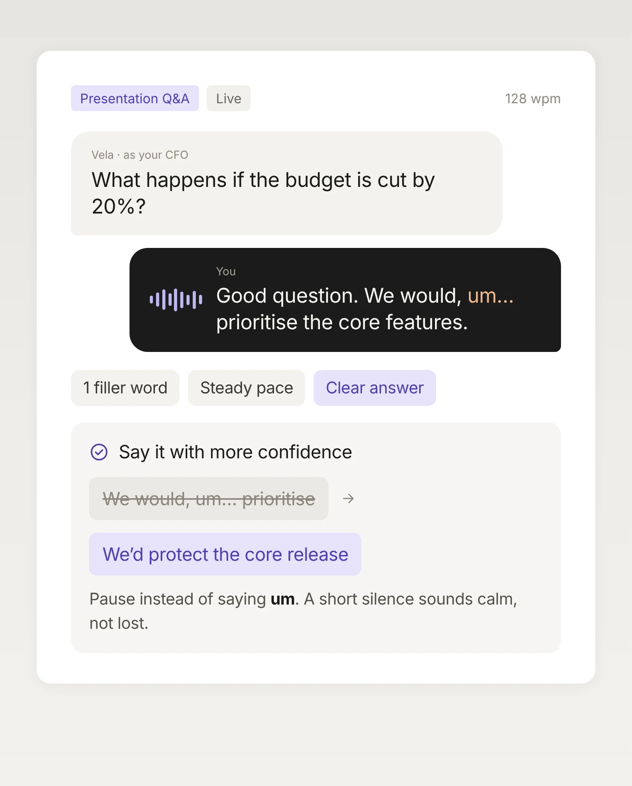
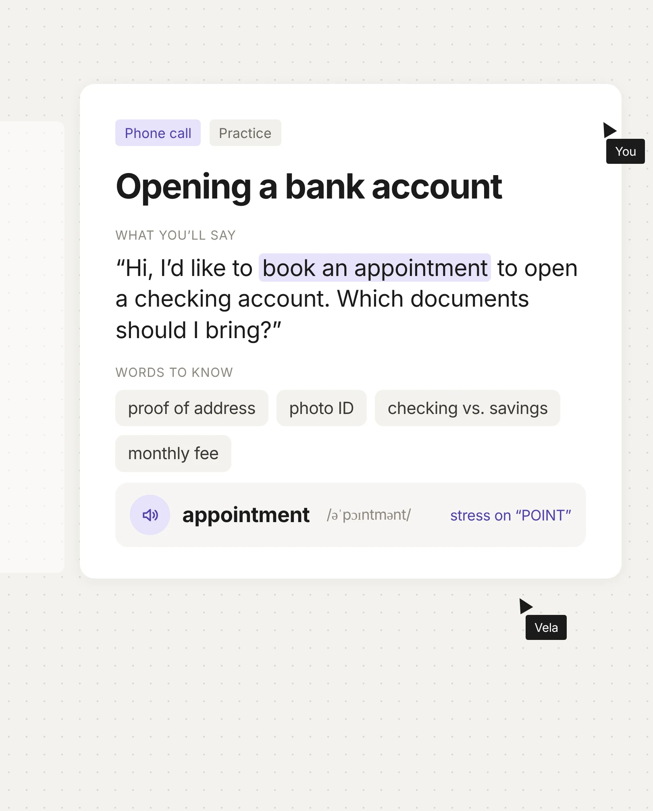

A short onboarding call learns which language you need, why you need it, what you want to achieve and where you are today, so your first session already fits you.
Languages you can
actually speak
TalkVela is your private AI speaking tutor for English, Japanese, Korean, Chinese, Spanish, French and German. Just talk, no hold-to-speak button. It learns your real level and teaches you to speak with confidence at work and in your new home.
English日本語한국어中文EspañolFrançaisDeutsch
Vela asks · Español · Job interview
Háblame de ti.
Your sentence
Vivo aquí pordesde hace dos años, y trabajo como enfermera.
Checking your answer
PronunciationClear
VocabularyGood word
FluencyNo pauses
Grammar1 fix
Vela listens to your whole answer, then picks the one thing worth fixing.
One small correction
Use desde hace for something that started in the past and is still true. Por is for a finished period.
Desde hace dos años · For two years, and still now
Vela is asking…
Try again
Your answer, polished
Vivo aquí desde hace dos años, y trabajo como enfermera.
Answer complete
PronunciationVocabularyFluencyGrammar · 1 fix
Saved to your phrase bank · desde hace dos años
Next: “¿Por qué quieres este trabajo?”Continue
Speak this sentence日本語
明日、面接があります。
Ashita, mensetsu ga arimasu.
Tomorrow I have an interview.
Tap to speak
Español 1 / 5
Mañana tengo una entrevista.
Listening…
Most apps teach you about a language. TalkVela helps you speak it.
How a session works
Talk first. Learn as you go.
How a session works
Talk first. Learn as you go.
Tell Vela your goal
English日本語한국어
CEFR
A1 Beginner
A2 Elementary
B1 Intermediate
B1+ You are hereNext: B2
B2 Upper-intermediate
C1 Advanced
C2 Proficient
N5 Basics
N4 Elementary
N3 You are hereNext: N2
N2 Business-ready
N1 Fluent
1 Beginner
2 Elementary
3 You are hereNext: 4
4 Intermediate
5 Advanced
6 Fluent
Your level, on your language’s own scale: CEFR, JLPT, TOPIK or HSK.
Every skill, one conversation
我想卖一本书。
Pronunciation · 中文 · tones
我想买 (mǎi) 一本书。 Tip: mǎi means buy, it dips then rises. Mài means sell.
Pronunciation that sounds natural
TalkVela hears the sounds you miss, like the English th, the Spanish rolled r or Mandarin tones, and shows you exactly how to fix them, right inside the conversation.

Gestern habe ich ins Kino gegeht.
Grammar · Deutsch
Gestern bin ich ins Kino gegangen. Verbs of movement take sein.
Grammar, fixed in the moment
Small mistakes get corrected as you speak, with a one-line reason, so the right form sticks without stopping to study a rule.
팀장님, 밥 먹었어?
Sound more natural · 한국어
팀장님, 식사하셨어요? Use the honorific form with your manager.
Words that make you sound fluent
Swap textbook lines for the phrases people really use at work and in daily life, in whichever language you’re learning, suggested from what you just tried to say.
Alors, euh, je pense que, euh, on devrait, genre, lancer le projet.
Fluency this week · Français
Fewer fillers, longer answers. You spoke for 4 minutes without stopping.
Fluency, not just accuracy
Fewer fillers, longer answers, faster replies. TalkVela tracks how freely you speak, not only how correctly.
Picked for you · Français · B1
Small talk about this weekend’s match
« Tu as vu le match samedi ? »
un match serréles prolongationsun score juste
5 min · 3 new phrasesStart speaking
Topics that follow your life
The more you talk, the better TalkVela knows your work and interests, and suggests relevant, trending topics instead of a rigid, boring curriculum.
TalkVelanow
Interview tomorrow at 10:00Warm up with a 5-minute mock round?
Start warm-upLater
TalkVela2h ago
You said “due to” 3 times this weekTry a new one today: owing to
TalkVelaMon
Trip to Madrid on FridayPractise asking: ¿Dónde está la estación?
TalkVelaSun
New topic picked for youSmall talk about this weekend’s match
Nudges, not nagging
Notifications based on your goals and progress, like a warm-up before tomorrow’s interview, instead of yet another streak reminder.
よろしくお願いします
Auto-addedyoroshiku onegaishimasu · 日本語
Meaning“Nice to meet you, I look forward to working with you.”
From your first-day intro · Oct 12
はじめまして、ミンです。よろしくお願いします。
PractisedBack in 2 days
Your phrase bank
Every useful phrase from your conversations is saved automatically, then brought back in later sessions until it’s yours.
Role-play · Viewing an apartment in BerlinDeutsch · B1
LDie Kaution beträgt eine Monatsmiete.
Bekomme ich die Kaution zurück?
Sounds natural. Also try:
Wann bekomme ich sie zurück?Was wird abgezogen?
Phrases for real situations
From job interviews in Tokyo to landlord calls in Berlin, practice the phrases you actually need at work and in your new home.
“Practice should feel like talking to a friend, not taking a test.”
“Real conversations reveal your real level. That’s where the right challenge starts.”
“Chatting is easy. We go deeper, so you actually speak better next time.”
Practice the language your life needs.
Practice the language your life needs.

Meetings & standups
Give clear updates, disagree politely and ask the follow-up question you usually keep to yourself.
Client calls
Rehearse the call before it happens, with Vela playing the client, interruptions and all.
Job interviews
Run mock interviews for your actual role and get feedback on what to say better, not just on grammar.

Presentations & Q&A
Practice your pitch out loud, then learn to handle the tough questions that come after it.
Doctor’s appointments
Describe how you feel clearly and understand what the doctor tells you back.
Renting a home
Call landlords, ask the right questions and negotiate without freezing up.
Small talk with neighbours
Get comfortable with the everyday chats that make a new place feel like home.

Banks, schools & paperwork
Handle calls with offices and institutions using the words you actually need.
Find your real speaking level in one conversation
Join early access and be one of the first to talk with Vela.